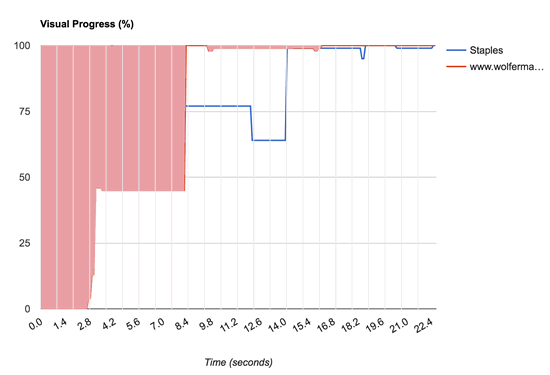
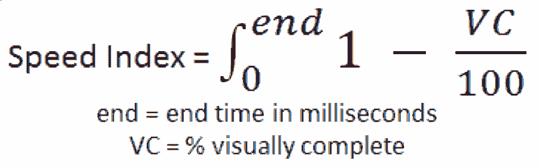

- Response to Input touch_app
- Animation & Scrolling directions_run
- Idle alarm
- Page Load cached
Estelle Weyl
Open Web Evangelist
Instart Logic
Twitter: @webdevtips, @estellevw, @standardista
Blog: www.standardista.com


What's involved in a page load?

- HTTP request with protocol, host, port, and path.
- DNS lookup (find host IP)
- Socket opened between browser and server hosting the initial request content
- HTTP request sent
- Server handles request
- Server sends HTTP response
- The browser receives and parses response
- Initial DOM tree is built
- Additional requests are made based on resources requested in initial response, including images, stylesheets, and scripts.
Go back to step 2 or 4 for each resource request. - Stylesheets (blocking) are parsed. CSSOM built.
- Scripts (blocking) are parsed and executed. DOM updated.
- Content gets rendered
Navigation Timing API metrics

Speed Index
Aggregate function on quickness of above-the-fold visual completion:

 4,462
4,462- 5,902

Pixel-wise similarity doesn’t capture shape similarity
Black/White = 50/50 MHD (Mean Histogram Difference) = 0


Pixel-wise similarity doesn’t capture color similarity


Speed Index
Aggregate function on quickness of above-the-fold visual completion:
- 4,462
- 5,902
Proposal for a perceptually oriented visual QoE metric
- Update: Frame-by-frame VC progress computation using SSIM

Without Jitter

With Jitter

PSI v. SI
- SI and PSI: linearly correlated
- Visual jitter / layout thrashing? PSI > SI
- PSI appears higher when visual jitter exists (Pop-up ads / large lay-out changes / etc.)
- SSIM based visual progress measurements match human perception more closely than MHD
- SSIM / MHD swap doesn’t affect websites without visual jitter

Wolfermans

Study Metrics
- 5,444 sessions, of which 51% were complete and valid
- 77,482 votes, of which 75% were valid

Feedback
Perception of speed and UX strongly impacted by popups / overlays

Hypothesis 1: Visual metrics will perform better than non-visual/network metrics

Not True
Hypothesis 1: Visual metrics will perform better than non-visual/network metrics

True
Hypothesis 2: No single metric can explain human choices with 90%+ accuracy
Still True
Hypothesis 3: User will not wait until “Visual Complete” to make their choice (despite the explicit instruction to wait until video turns grey)

User Experience > Developer Experience